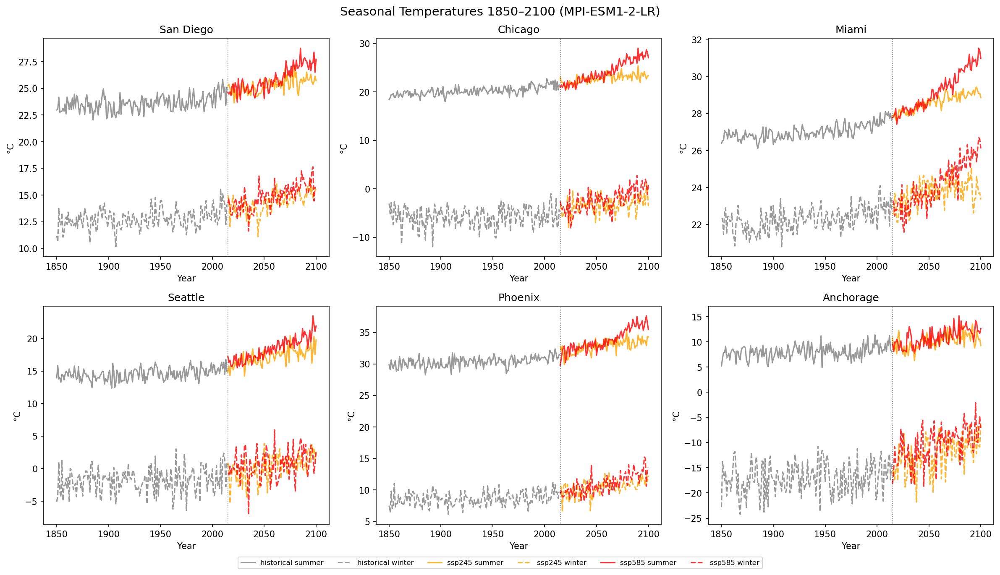
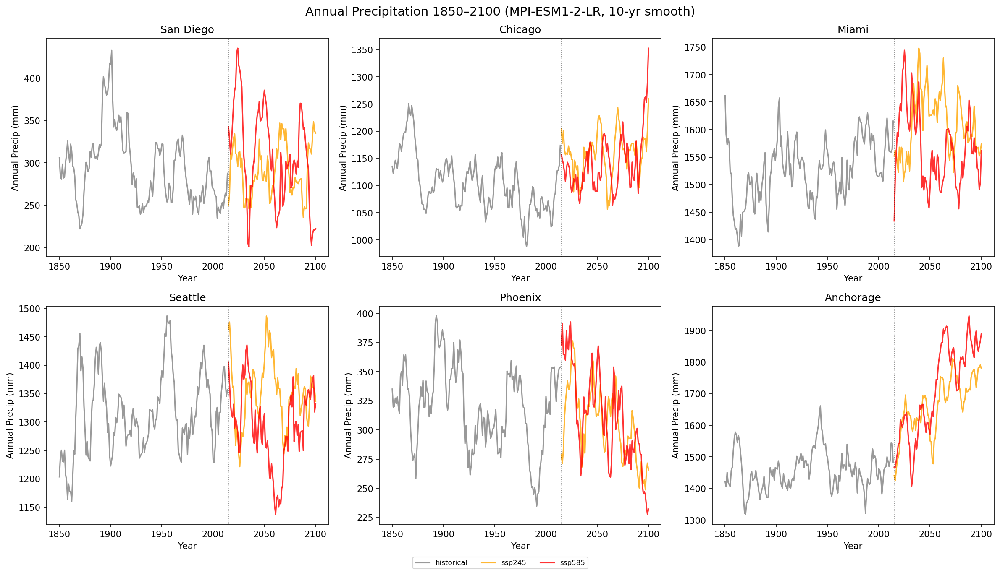
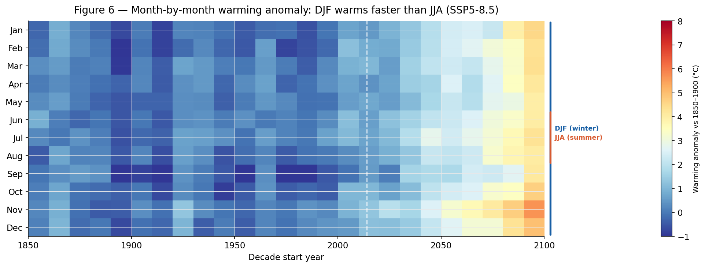
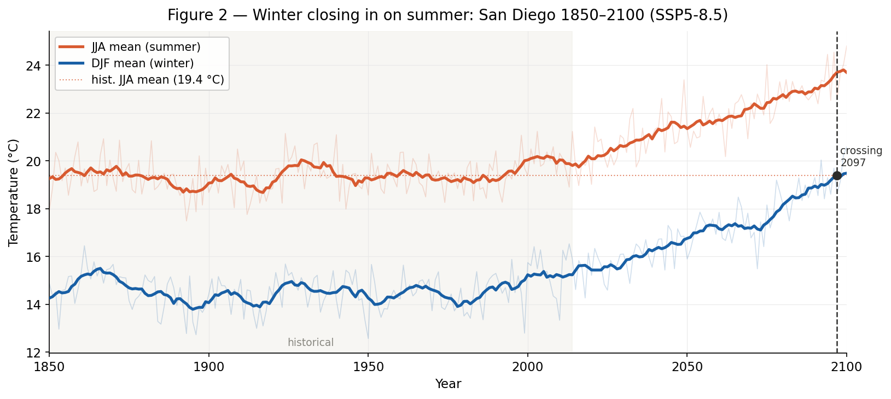

Surface air temperature trends from CMIP6 historical simulations (1850–2014)
Monthly and 12-month rolling mean of global average surface air temperature across CMIP6 models.
Monthly and 12-month rolling mean of global average surface air temperature across CMIP6 models.
Data: CMIP6 NCAR CESM2 historical simulation · Rolling mean computed over 12-month window
Data: CMIP6 NCAR CESM2 historical simulation · Rolling mean computed over 12-month window



